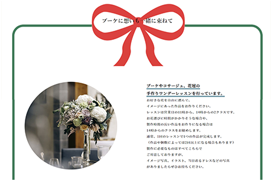
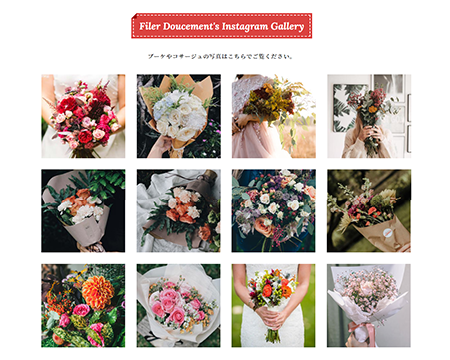

Concept 「 ここだけのもの、ここだけの体験 」
自分だけのオリジナルブーケが作れる体験や、
毎週届くお花の定期便のサービスの認知度の向上、お問い合わせ件数増加が目的
- 制作過程 -
【 概要 】
訓練校での卒業制作です。
架空のお店や企業のWEBサイトを自由に作成。
ヒアリングシート・企画書から初めて1から制作しました。
学校からの指定：topページ+下層ページ3P以上


Target
【ペルソナ】
20代の会社員の女性。結婚式に備えて準備中の花嫁。
費用をなるべく抑え、手作り感あふれる結婚式にしたいと思っている。
Instagramをしていて、プレ花嫁のハッシュタグで投稿しつつ、
情報収集をしている。
人と被りたくない、とことんこだわりたいという気持ちが強い。
Design・Color
花の持つ美しさや温かさというワードを念頭に置きながら、
一目で花の華やかさが伝わるサイトにしたいと考えました。
写真をメインに構成し、Instagramなどの写真から、
ユーザーが、自分だったらどんなものにしたいのかを
イメージしやすいよう心掛けた。
色とりどりの花を主役にするために、背景を白色。
植物を見ることで感じるリラックス効果と連想して、ベースを緑色。
見出しにはアクセントカラーとして赤色を使用し、
ブーケのラッピングをイメージしてデザインで表現しました。
植物がもたらすリラックス効果で、心に余裕ができ、
ゆったりとした時間が流れているイメージを
余白をしっかり空けることで、伝わるデザインにしています。